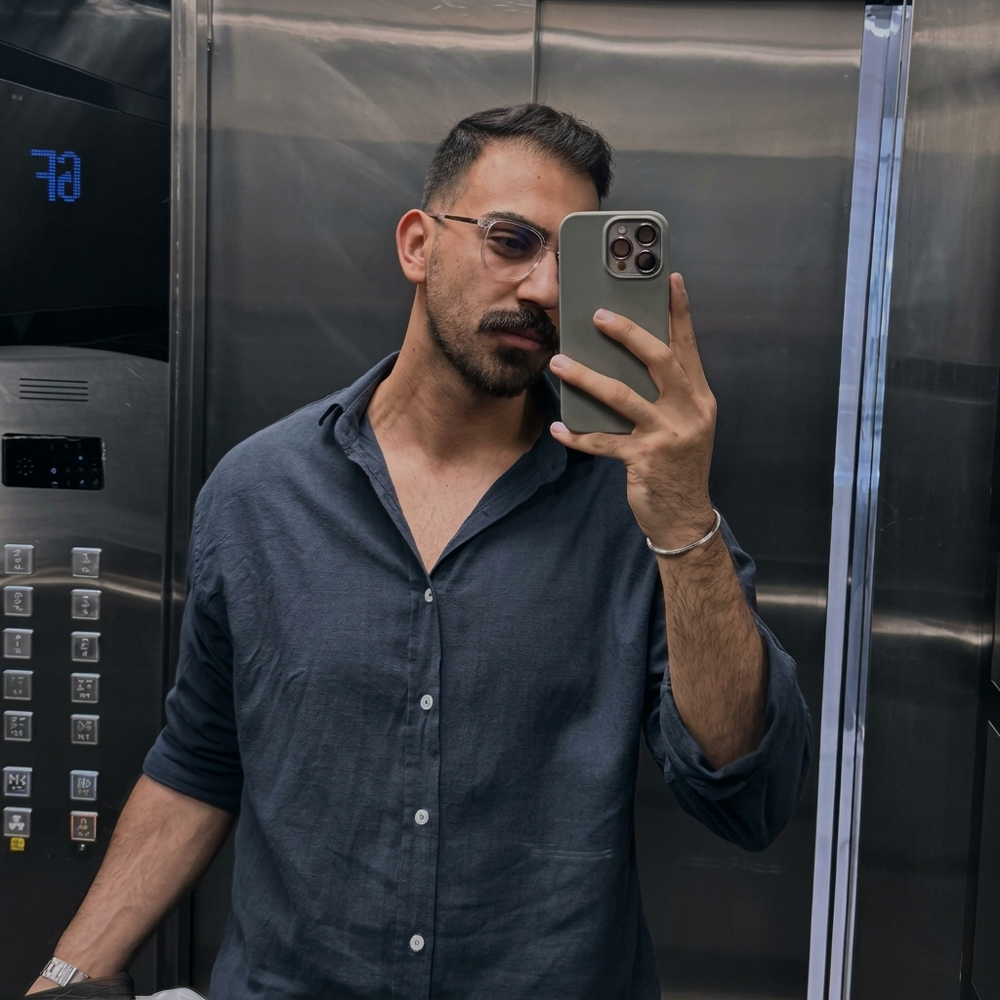
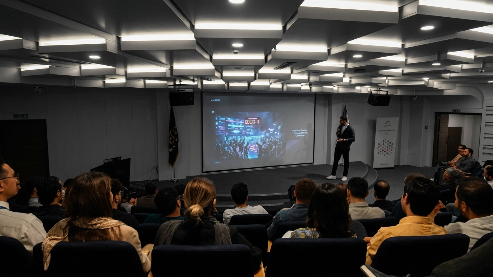
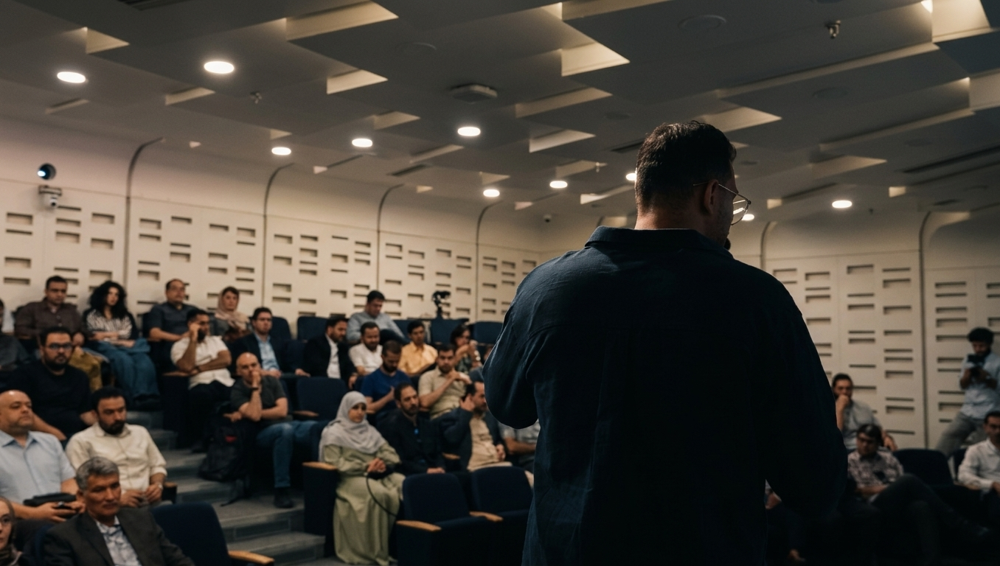

IT & Infrastructure Engineer
Zarrin Pal Group
IT infrastructure, network operations, and system reliability.
DevOps engineer · Tehran, Iran
Hands-on infrastructure.
Thoughtful automation.
I work with Linux, containers, and deployment pipelines, grounded in practical experience with networks and servers.

01 / Background
I started in Help Desk in 2018. After about two years supporting users and troubleshooting systems, I moved toward network administration and hands-on work with switches and servers.
For about a year, my focus has been DevOps: working with Linux, Docker, CI/CD pipelines, monitoring, and automation. That operational background shapes how I approach reliable systems and deployment workflows.
Linux · Switches & servers · MikroTik · FortiGate
Docker · Kubernetes · GitLab CI · GitHub Actions
Ansible · Monitoring · Backups · Proxmox
02 / Experience
Zarrin Pal Group
IT infrastructure, network operations, and system reliability.
AMIR
CI/CD pipelines, deployment workflows, and infrastructure operations.
03 / Beyond the terminal
A few moments from the room.


04 / Contact
Have something in mind?
I’d be happy to hear from you.